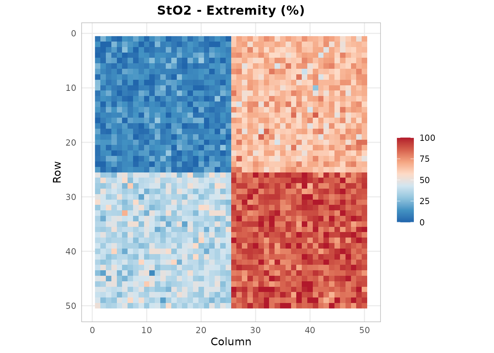
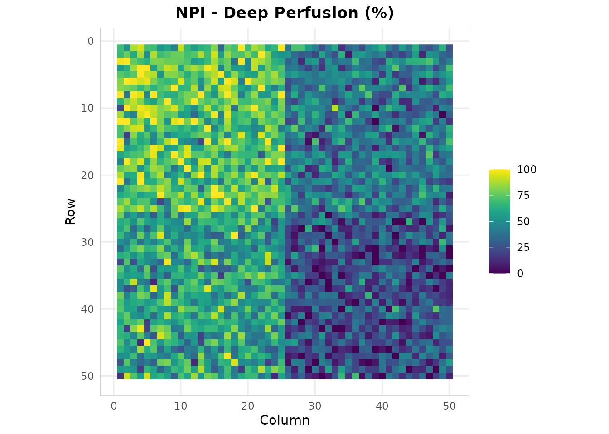
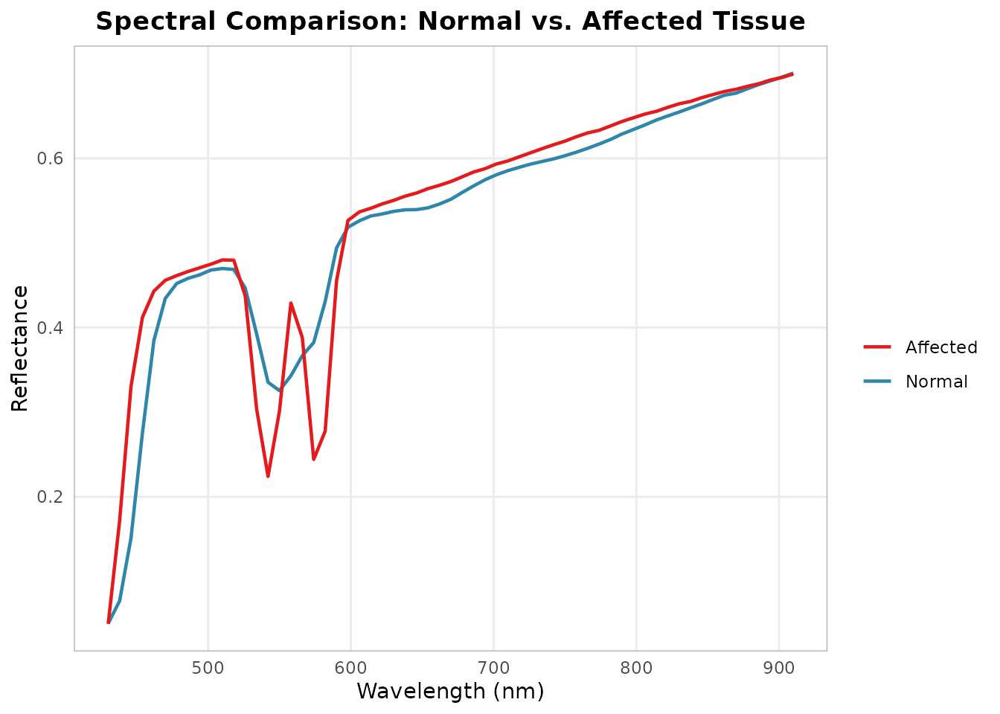

Compartment Syndrome HSI Assessment
Source:vignettes/compartment-syndrome.Rmd
compartment-syndrome.Rmd


library(hyperspectR)
#> hyperspectR v0.1.0 - Hyperspectral Imaging Analysis for Biomedical ApplicationsClinical Background
Acute compartment syndrome (ACS) is a surgical emergency where increased pressure within a closed muscle compartment compromises tissue perfusion. Traditional diagnosis relies on clinical assessment and invasive intra- compartmental pressure (ICP) measurement.
Hyperspectral imaging offers a non-invasive alternative by quantifying tissue oxygenation through the skin surface, enabling spatial mapping of perfusion compromise.
Simulating an Extremity Scene
We simulate a tissue scene with a region of reduced oxygenation representing compartment syndrome:
cube <- hs_simulate_cube(rows = 50, cols = 50, n_regions = 4,
sto2_range = c(0.15, 0.9), seed = 123)Tissue Oxygenation Mapping
sto2 <- hs_sto2(cube)
hs_plot_index(sto2, title = "StO2 - Extremity (%)", palette = "sto2")
Regions with StO2 below 40% may indicate critical ischemia.
Perfusion Assessment
npi <- hs_npi(cube)
hs_plot_index(npi, title = "NPI - Deep Perfusion (%)", palette = "perfusion")
ROI Comparison: Affected vs. Unaffected
roi_affected <- hs_roi_rect(cube, x_range = c(30, 50), y_range = c(30, 50))
roi_normal <- hs_roi_rect(cube, x_range = c(1, 20), y_range = c(1, 20))
stats_aff <- hs_roi_stats(cube, roi_affected)
stats_norm <- hs_roi_stats(cube, roi_normal)
library(ggplot2)
ggplot() +
geom_line(data = stats_norm,
aes(x = wavelength, y = mean, color = "Normal"), linewidth = 0.8) +
geom_line(data = stats_aff,
aes(x = wavelength, y = mean, color = "Affected"), linewidth = 0.8) +
scale_color_manual(values = c(Normal = "#2E86AB", Affected = "#E41A1C")) +
labs(x = "Wavelength (nm)", y = "Reflectance",
title = "Spectral Comparison: Normal vs. Affected Tissue", color = "") +
theme_hsi()
The affected compartment shows reduced reflectance in the visible range (increased Hb absorption) and altered spectral shape, consistent with venous congestion and tissue deoxygenation.